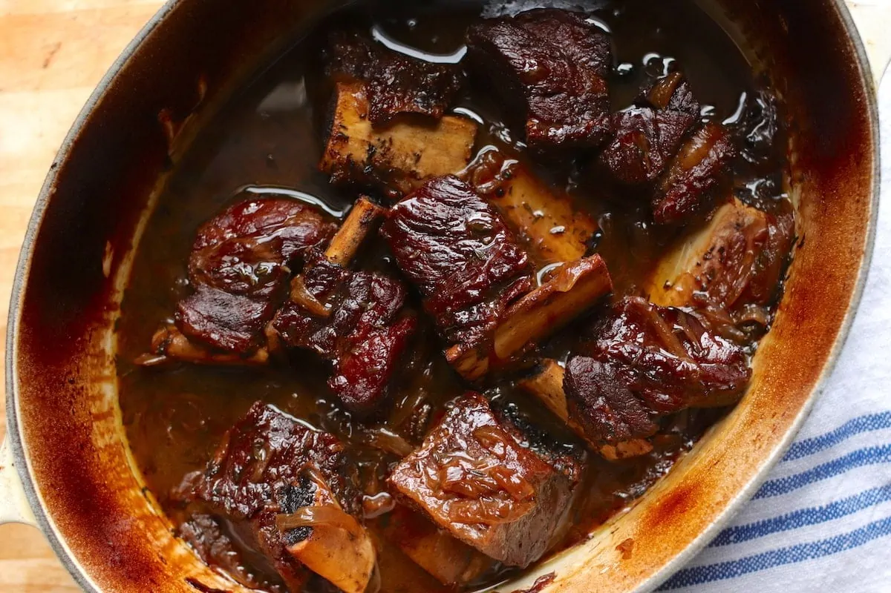

Braised Beef Short Ribs

Ingredients
- 6-8 lbs beef short ribs, bone-in
- 1 medium yellow onion
- 3 celery stalks
- 3 carrots, peeled
- 1 tablespoon tomato paste
- 1 whole head of garlic
- 2 cups dry red wine
- 1 quart beef stock
- 3 sprigs of thyme
Preparation
- Season the short ribs liberally with salt and pepper and sear on high heat in a large dutch oven. Remove from pot.
- Dice onion, carrots, and celery and add to the pot. Let cook on medium heat for about 10-15 minutes, until onion is translucent.
- Add tomato paste and stir into cooking mirepoix.
- Slice garlic head in half and place in middle of dutch oven, with direct contact on the pot. Cook for 1 minute.
- Add red wine and cook for 5 minutes, allowing alcohol to cook off entirely.
- Add beef stock and bring everything to a boil.
- Once boiling, reduce heat to low and add sprigs of thyme. Cover and cook on low for 4-5 hours or longer, until short rib is tender and falls off the bone with little resistance.
- Remove short rib from pot and strain solids from cooking liquid. reduce cooking liquid until a sauce-like consistency.
- Season to taste and serve with mashed potatos, or another side you prefer!